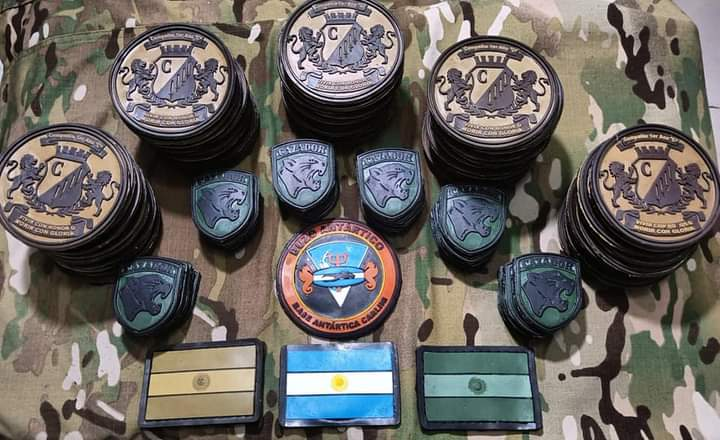

Conocenos
Somos una empresa dedicada al diseño fabricación y producción de parches de PVC. Empezamos como un proyecto para diseñar parches para las Tropas de Operaciones Especiales del EA(EJERCITO ARGENTINO), ya que teníamos la necesidad de contar con parches que no solo sirvieran para la identificación, sino que además, cumplieran con funciones tácticas y tengan la resistencia para ser usados en los ambientes mas exigentes. De ese Proyecto nació DELTA ZULU Argentina, y hoy en día equipamos no solamente a unidades de las FFAA(FUERZAS ARMADAS) si no a elementos de FFSS(FUERZAS DE SEGURIDAD) y Equipos de Airsoft. Nuestros equipos no solo tienen la mejor resistencia si no que además tienen los mejores diseños ya que "Parte de ser genial, es verse genial".
